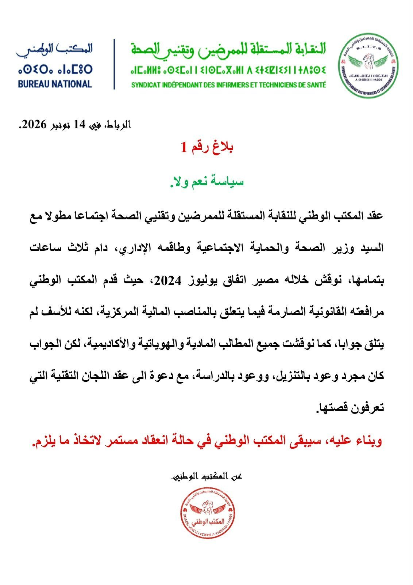

بلاغ رقم 1 – «سياسة نعم ولا»: المكتب الوطني في حالة انعقاد مستمر بعد اجتماع ثلاث ساعات مع وزير الصحة

عقد المكتب الوطني للنقابة المستقلة للممرضين وتقنيي الصحة اجتماعاً مطوّلاً مع السيد وزير الصحة والحماية الاجتماعية وطاقمه الإداري، دام ثلاث ساعات بتمامها، نوقش خلاله مصير اتفاق يوليوز 2024، حيث قدّم المكتب الوطني مرافعته القانونية الصارمة فيما يتعلق بالمناصب المالية المركزية، لكنه للأسف لم يتلقَّ جواباً.
كما نوقشت جميع المطالب المادية والهوياتية والأكاديمية، لكن الجواب كان مجرد وعود بالتنزيل، ووعود بالدراسة، مع دعوة إلى عقد اللجان التقنية التي تعرفون قصتها.
وبناءً عليه، سيبقى المكتب الوطني في حالة انعقاد مستمر لاتخاذ ما يلزم.
عن المكتب الوطني الرباط، في 14 نونبر 2026
فتح في تطبيق النقابة